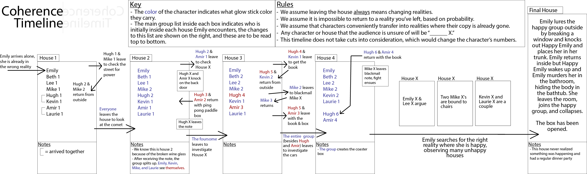

"(Coherence) was based on a very inside wish to have a layer of puzzle going on, for people who watch the film and start graphing and mapping, that sort of thing." - James Byrkit, the director
Having trouble seeing the image? Click here for a larger version, and here for a monochrome version.
© Arrien Gadue, 2019